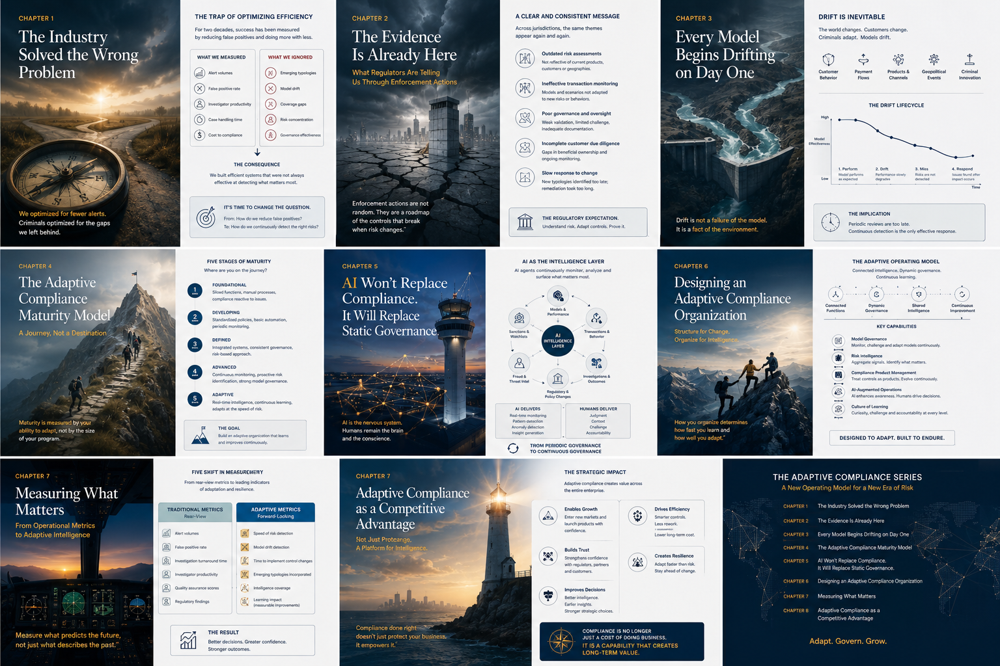
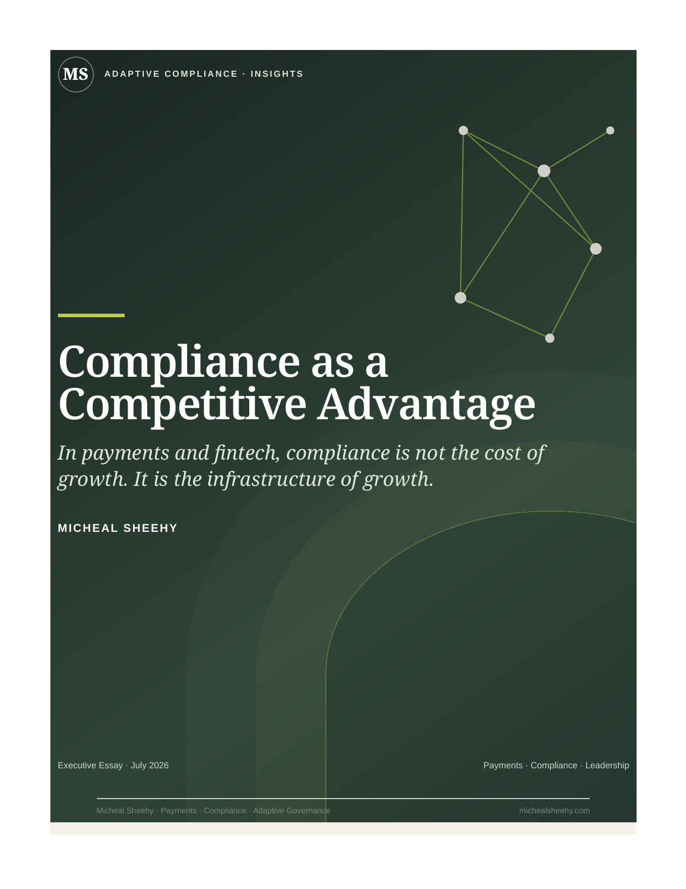

The Industry Solved the Wrong Problem
A practical method for moving transaction monitoring beyond alert reduction toward risk coverage, detection effectiveness and governed redesign.
A connected body of work on how compliance must evolve—and what payments and fintech companies gain when it does.
Static controls cannot govern dynamic risk. The future belongs to institutions that learn, adapt and turn compliance intelligence into better decisions.
The expanded implementation edition combines the complete eight-chapter argument with case studies, operating models, templates, governance tools and 30/60/90-day action plans.

A practical method for moving transaction monitoring beyond alert reduction toward risk coverage, detection effectiveness and governed redesign.
A regulatory-intelligence workflow for translating enforcement lessons into applicability assessments, control changes and sustainable remediation.
How to distinguish, monitor and govern data, population, concept and performance drift through dashboards, thresholds and escalation.
A scored assessment, evidence model and transformation roadmap for moving from reactive governance to continuous intelligence.
A practical AI-governance model covering use-case classification, human oversight, quality assurance, incident response and accountability.
An operating model for connecting global governance, regional intelligence, product compliance, model oversight and specialist centers of excellence.
A decision-linked KPI and KRI framework for measuring risk coverage, model health, customer friction, adaptability and governance response.
How to embed compliance into product development, market expansion, risk appetite, investment planning and executive decision-making.
How Payments and Fintech Companies Win Through Trust, Intelligence and Speed
Payments companies operate through licences, banks, networks, settlement partners and institutional trust. Volume II argues that the strongest compliance functions do more than prevent loss: they create certainty, improve product design, protect market access and help the company move responsibly through complexity.
Poorly designed compliance creates friction. Mature compliance creates certainty. Certainty creates speed.
Identify regulatory and risk constraints while products are still being designed.
Translate requirements into customer journeys, product logic and reusable controls.
Earn the confidence required for licences, banking relationships and market access.
Connect identity, behaviour, devices, networks and geography into strategic insight.

Available for keynotes, executive roundtables, board discussions, podcasts and industry panels.